실내건축기사(구) (2018-09-15 기출문제)
1과목: 실내디자인론
1. 사무소 건축의 코어 유형에 관한 설명으로 옳지 않은 것은?
- 중앙코어형은 기준층 바닥면적이 작은 경우에 주로 사용된다.
- 양단코어형은 2방향 피난에 이상적인 관계로 피난상 유리하다.
- 편단코어형은 코어의 위치를 사무소 평면상의 어느 한쪽에 편중하여 배치한 유형이다.
- 외코어형은 설비 덕트나 배관을 코어로부터 사무실 공간으로 연결하는데 제약이 많다.
(정답률: 72%)

2. 다음과 같은 특징을 갖는 문의 종류는?
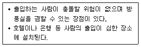
- 회전문
- 접이문
- 미닫이문
- 여닫이문
(정답률: 88%)
3. 현실적 형태 중 자연형태에 관한 설명으로 옳지 않은 것은?
- 기하학적으로 취급한 점, 선, 면, 입체 등이 속한다.
- 자연계에 존재하는 모든 것으로부터 보이는 형태를 말한다.
- 조형의 원형으로서 작용하며 기능과 구조의 모델이 되기도 한다.
- 단순한 부정형의 형태를 취하기도 하지만 경우에 따라서는 체계적인 기하학적인 특징을 갖는다.
(정답률: 70%)
4. 다음 설명에 알맞은 블라인드의 종류는?
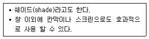
- 롤(roll) 블라인드
- 로만(roman) 블라인드
- 버티컬(vertical) 블라인드
- 베니션(venetian) 블라인드
(정답률: 84%)
5. 다음 중 주거공간의 효율을 높이고, 데드 스페이스(dead space)를 줄이는 방법과 가장 거리가 먼 것은?
- 플랫폼 가구를 활용한다.
- 기능과 목적에 따라 독립된 실로 계획한다.
- 침대, 계단 밑 등을 수납공간으로 활용한다.
- 가구와 공간의 치수체계를 통합하여 계획한다.
(정답률: 74%)
6. 사무소의 실단위 계획 중 개방식 배치에 관한 설명으로 옳지 않는 것은?
- 독립성 및 자연채광조건이 좋다.
- 모든 면적을 유용하게 이용할 수 있다.
- 칸막이 벽이 없는 관계로 공사비가 낮다.
- 공간의 길이나 깊이에 변화를 줄 수 있다.
(정답률: 75%)
7. POE(Post-Occupancy Evaluation)의 의미로 가장 알맞은 것은?
- 건축물을 사용해 본 후에 평가하는 것이다.
- 낙후 건축물의 이상 유무를 평가하는 것이다.
- 건축물을 사용해 보기 전에 성능을 예상하는 것이다.
- 건축도면 완성 후 건축주가 도면의 적정성을 평가하는 것이다.
(정답률: 69%)
8. 다음 중 기능분석 내용을 바탕으로 하여 구성요소의 배치(lay-out)를 행할 때 고려해야 할 사항과 가장 거리가 먼 것은?
- 공간 상호간의 연계성
- 출입형식 및 동선체계
- 색채 및 재료의 유사성
- 인체공학적 치수와 가구 크기
(정답률: 81%)
9. 사무소 건축의 평면유형에 관한 설명으로 옳지 않은 것은?
- 2중지역 배치는 중복도식의 형태를 갖는다.
- 3중지역 배치는 저층의 소규모 사무소에 주로 적용된다.
- 2중지역 배치에서 복도는 동서 방향으로 하는 것이 좋다.
- 단일지역 배치는 경제성보다는 쾌적한 환경이나 분위기 등이 필요한 곳에 적합한 유형이다.
(정답률: 60%)
10. 실내공간을 형성하는 기본구성요소에 관한 설명으로 옳지 않은 것은?
- 개구부는 벽체를 대신하여 건축 구조 요소로 사용된다.
- 벽은 공간을 에워싸는 수직적 요소로 수평 방향을 차단하여 공간을 형성하는 기능을 갖는다.
- 천장은 시각적 흐름이 최종적으로 멈추는 곳으로 내부 공간 요소 중 조형적으로 가장 자유롭다.
- 바닥은 천장과 함께 공간을 구성하는 수평적 요소이며 고저차로써 공간의 영역을 조정할 수 있다.
(정답률: 75%)
11. 수직벽면을 빛으로 쓸어내리는 듯한 효과를 주기 위해 비대칭 배광방식의 조명기구를 사용하여 수직벽면에 균일한 조도의 빛을 비추는 조명의 연출기법은?
- 실루엣(silhouette) 기법
- 글레이징(glazing) 기법
- 월 워싱(wall washing) 기법
- 그림자 연출(shadow play) 기법
(정답률: 81%)
12. 다음 중 다의도형 착시의 사례로 가장 알맞은 것은?
- 루빈의 항아리
- 펜로즈의 삼각형
- 쾨니히의 목걸이
- 포겐도르프 도형
(정답률: 73%)
13. 다음 설명에 알맞은 건축화조명방식은?
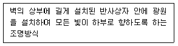
- 코퍼 조명
- 광창 조명
- 코니스 조명
- 광천장 조명
(정답률: 68%)
14. 다음 중 선의 종류별 조형효과로 가장 알맞은 것은?
- 사선 - 안정, 침착
- 곡선 - 유연, 우아함
- 수직선 - 확대, 영원
- 수평선 - 약동감, 속도감
(정답률: 84%)
15. 다음 각 공간의 관계가 주택 평면계획 시 고려되는 인접의 원칙에 속하지 않는 것은?
- 거실 - 현관
- 식당 - 주방
- 거실 - 식당
- 침실 - 다용도실
(정답률: 80%)
16. 디자인의 원리에 관한 설명으로 옳은 것은?
- 균형은 정적인 경우에만 시각적 안정성을 가져올 수 있다.
- 강조는 힘의 조절로서 전체 조화를 파괴하는데 주로 사용된다.
- 리듬은 청각의 원리가 시각적으로 표현된 것이라 할 수 있다.
- 통일과 변화는 서로 대립되는 관계로, 동시 사용이 불가능하다.
(정답률: 76%)
17. 의자 및 소파에 관한 설명으로 옳지 않은 것은?
- 스툴은 등받이와 팔걸이가 없는 형태의 보조 의자이다.
- 체스터필드는 사용상 안락성이 매우 크고 비교적 크기가 크다.
- 풀업 체어는 필요에 따라 이동시켜 사용할 수 있는 간이 의자이다.
- 세티는 고대 로마시대에 음식물을 먹거나 잠을 자기위해 사용했던 긴 의자이다.
(정답률: 72%)
18. 주택의 욕실 계획에 관한 설명으로 옳지 않은 것은?
- 방수성, 방오성이 큰 마감재료를 사용한다.
- 욕실의 조명은 방습형 조명기구를 사용한다.
- 욕실 바닥은 미끄럼을 방지할 수 있는 재료를 사용한다.
- 모든 욕실에는 기능상 욕조, 변기, 세면기가 통합적으로 갖추어져야 한다.
(정답률: 83%)
19. 다음 설명에 알맞은 특수전시기법은?
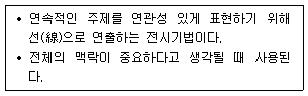
- 디오라마 전시
- 파노라마 전시
- 아일랜드 전시
- 하모니카 전시
(정답률: 78%)
20. 다음 중 상점 내 진열장 배치계획에서 가장 우선적으로 고려하여야 할 사항은?
- 동선의 흐름
- 조명의 조도
- 바닥 마감재료
- 진열장의 치수
(정답률: 84%)
2과목: 색채학
21. 한국의 오방색과 방향의 연결로 옳은 것은?
- 청색 - 동
- 적색 - 서
- 황색 - 남
- 백색 - 북
(정답률: 64%)
22. 도시의 잡다하고 상스럽고 저속한 양식에 대한 숭배로부터 비롯되었으며 전체적으로 어두운 톤을 사용하고 그 위에 혼란한 강조색을 사용하는 예술사조는?
- 아방가르드
- 다다이즘
- 팝아트
- 포스트모더니즘
(정답률: 64%)
23. 비렌의 색채 조화론에서 사용되는 색조군에 대한 설명 중 옳은 것은?
- Tint : 흰색과 검정이 합쳐진 밝은 색조
- Tone : 순색과 흰색이 합쳐진 톤
- Shade : 순색과 검정이 합쳐진 어두운 색조
- Gray : 순색과 흰색 그리고 검정이 합쳐진 회색조
(정답률: 58%)
24. CIE 표색방법에 관한 설명 중 옳은 것은?
- 적, 녹, 청의 3색광을 혼합하여 3자 극치에 따른 표색 방법
- 색필터의 중심으로 인한 다른 색상의 표색방법
- 일정한 원색을 혼합하여 얻는 방법
- 주관적인 색채 표시방법
(정답률: 58%)
25. 다음 중 속도감이 가장 둔한 느낌의 색상은?
- 노랑
- 빨강
- 주황
- 청록
(정답률: 78%)
26. 보색의 색광을 혼합한 결과는?
- 흰색
- 회색
- 검정
- 보라
(정답률: 62%)
27. 다음 중 동일색상의 배색은?
- 주황 - 갈색
- 주황 - 빨강
- 노랑 - 연두
- 노랑 - 검정
(정답률: 64%)
28. 다음 가법혼색 중 틀린 것은?
- green + blue = cyan
- red + blue = magenta
- green + red = black
- red + green + blue = white
(정답률: 79%)
29. 색의 속성에 관한 설명 중 틀린 것은?
- 여러 파장의 빛이 고루 섞이면 백색이 된다.
- 무채색 이외의 모든 색은 유채색이다.
- 무채색은 채도가 0인 상태인 것을 말한다.
- 물체색에는 백색, 회색, 흑색이 없다.
(정답률: 73%)
30. 소극적인 인상을 주는 것이 특징으로 중명도, 중채도인 중간색계의 덜(dull) 톤을 사용하는 배색기법은?
- 포 까마이외 배색
- 까마이외 배색
- 토널 배색
- 톤 온 톤 배색
(정답률: 58%)
31. 먼셀의 색체계에 대한 설명이 틀린 것은?
- 중심축은 무채색으로 명도를 나타낸다.
- 중심부로 갈수록 채도가 높아진다.
- 색상마다 최고 채도의 위치는 다르다.
- 중심부에서 하단으로 내려가면 명도는 낮아진다.
(정답률: 72%)
32. 오스트발트 색체계의 설명으로 틀린 것은?
- 3색 이상의 회색은 채도가 등간격이면 조화롭다.
- 색입체가 대칭구조를 이루고 있다.
- 기본색은 노랑, 빨강, 파랑, 초록이다.
- la - na - pa는 등혹색계열을 나타낸다.
(정답률: 38%)
33. 터널의 출입구 부분에 조명이 집중되어 있고, 중심부로 갈수록 광원의 수가 적어지며 조도수준이 낮아지고 있다. 이것은 어떤 순응을 고려한 설계인가?
- 색순응
- 명순응
- 암순응
- 무채순응
(정답률: 81%)
34. 색의 명시성의 주요인이 되는 것은?
- 연상의 차이
- 색상의 차이
- 채도의 차이
- 명도의 차이
(정답률: 62%)
35. 문∙스펜서의 색채 조화론에서 사용되지 않는 용어는?
- 동일의 조화
- 유사의 조화
- 대비의 조화
- 등색상의 조화
(정답률: 61%)
36. 공공건축공간(공장, 학교, 병원)의 색채환경을 위한 색채조절 시 고려해야 할 사항으로 거리가 먼 것은?
- 능률성
- 안전성
- 쾌적성
- 내구성
(정답률: 73%)
37. 먼셀의 색체계에서 5R의 보색은?
- 5Y
- 5G
- 5PB
- 5BG
(정답률: 63%)
38. 다음 컬러모드 중 헤링의 4원색설에 기초를 두고 있는 것은?
- RGB 컬러모드
- CMYK 컬러모드
- WEB 컬러모드
- Lab 컬러모드
(정답률: 50%)
39. 유리컵과 같은 투명체 속의 일정한 공간이 꽉 차 있는 듯한 부피감을 느끼게 해주는 색은?
- 투명면색
- 투과색
- 공간색
- 물체색
(정답률: 65%)
40. 정육점에서 싱싱해 보이던 고기가 집에서는 그 색이 다르게 보이는 이유는?
- 색의 순응현상
- 색의 동화현상
- 색의 연색성
- 색의 항상성
(정답률: 70%)
3과목: 인간공학
41. 소리의 강도를 나타내는 단위로 맞는 것은?
- dB
- rem
- SHU
- cycle
(정답률: 84%)
42. 계기반에 각종 표시장치를 배치하는 원칙으로 적절하지 않은 것은?
- 중요성의 원칙
- 사용 순서의 원칙
- 사용 빈도의 원칙
- 동일형상 배치의 원칙
(정답률: 72%)
43. 정량적 시각 표시장치의 기본 눈금선 수열로 가장 적당한 것은?
- 0, 1, 2, …
- 0, 5, 10, …
- 0, 3, 6, …
- 0, 8, 16, …
(정답률: 62%)
44. 정보의 입력장치에 있어서 청각적 표시장치보다 시각적 표시장치의 사용이 더 유리한 경우는?
- 정보가 간단한 경우
- 정보가 후에 재참조되는 경우
- 정보가 시간적인 사상을 다루는 경우
- 정보가 즉각적인 행동을 요구하는 경우
(정답률: 65%)
45. 반사율을 구하는 공식으로 맞는 것은?
- 조도/휘도
- 조도-휘도/휘도
- 휘도/조도
- 조도-휘도/조도
(정답률: 56%)
46. 청각 마스킹(masking) 효과를 이용하여 음량적, 음질적으로 귀에 거슬리지 않도록 하는 시스템은?
- MMI 시스템
- BGM 시스템
- 인터페이스 시스템
- 노이즈 마스킹 시스템
(정답률: 81%)
47. 조도의 평균성을 균일도(uniformity)라 한다. 균일도를 구하는 공식으로 맞는 것은? (단, u : 균일도, E1 : 최고조도, E2 : 최저조도, E3 : 평균조도이다.)
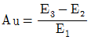
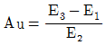
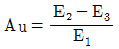
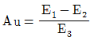
(정답률: 60%)
48. 인체의 감각기관을 통해 현존하는 환경의 자극에 대한 정보를 받아들이게 되는 과정을 무엇이라 하는가?
- 지각
- 반응
- 주의
- 선호도
(정답률: 81%)
49. 조명과 관계된 단위의 설명으로 맞는 것은?
- 럭스(lx)는 광원이 빛나는 정도이다
- 와트(W)란 에너지 방사의 시간적 비율이다.
- 루멘(lm)은 단위면적 또는 단위시간에 받는 빛의 양이다.
- 루멘-아워(lm/h)는 가시범위의 방사속을 빛의 강도로 환산한 것이다.
(정답률: 42%)
50. 소음원(noise source)을 통제하는 방법과 가장 거리가 먼 것은?
- 소음원의 위치 변경
- 귀마개(earplug) 사용
- 차폐장치 및 흡음재 사용
- 덮개(enclosure) 등의 사용
(정답률: 61%)
51. 인간공학적 효과를 평가하는 기준과 가장 거리가 먼 것은?
- 체계의 상징성
- 훈련비용의 절감
- 사용편의성의 향상
- 사고나 오용으로부터의 손실 감소
(정답률: 61%)
52. 광원으로부터의 직사 휘광 처리에 대한 설명으로 틀린 것은?
- 광원의 휘도와 수를 늘린다.
- 광원을 시선에서 멀리 위치시킨다.
- 가리개(shield), 갓(hood) 등을 사용한다.
- 휘광원 주위를 밝게 하여 광도비를 줄인다.
(정답률: 74%)
53. 시각적 표시장치에 있어 표지 도안의 원칙에 관한 설명으로 가장 적절하지 않은 것은?
- 표지는 가능한 한 통일성이 있어야 한다.
- 테두리 속의 그림은 지각과정을 감소시킨다.
- 그림의 경계는 대비(contrast)가 좋아야 한다.
- 그림과 바탕의 구별이 분명하고 안정되어야 한다.
(정답률: 77%)
54. 인체측정 데이터를 선정할 때 고려해야 할 사항으로 맞는 것은?
- 평균치를 사용하는 것이 가장 적절한 방법이다.
- 계측자의 응용에 있어서 누드상태의 계측치에 여유 치수를 더하여야 된다.
- 수용공간이 중요한 고려 사항이라면 하위 5%나 이보다 작은 값이 적용되어야 한다.
- 앉은 자세나 선 자세에서 팔의 도달을 문제점으로 한다면 상위 95%의 자료가 사용되어야 한다.
(정답률: 55%)
55. 인간이 신체활동을 하는 데 있어서 그 관련성이 가장 적은 것은?
- 골격
- 신경계통
- 골격근
- 인지능력
(정답률: 59%)
56. 시력에 대한 일반적인 설명으로 틀린 것은?
- 홍채(iris)는 어두우면 커지고 밝으면 작아진다.
- 색을 구별하는 색각은 빛의 파장의 차이에 의해 일어난다.
- 암순응 과정은 간상체 순응 후에 원추체 순응으로 진행된다.
- 시력은 세부내용을 판별할 수 있는 능력으로서 주로 눈의 조절능에 따라 달라진다.
(정답률: 61%)
57. 시각적 표시장치를 가장 편히 볼 수 있는 설치 각도는?
- 수평보다 10°~15° 위쪽
- 수평보다 20°~35° 위쪽
- 수평보다 10°~15° 아래쪽
- 수평보다 20°~35° 아래쪽
(정답률: 68%)
58. 잔상(after-images)에 대한 설명 중 틀린 것은?
- 음성잔상에서는 흑백이 뒤바뀐다.
- 음성잔상에서는 색의 보색이 보인다.
- 잔상과 시각의 뒤바뀜은 관계가 없다.
- 잔상이란 망막이 자극을 받은 후 시신경의 흥분이 남아있다는 것이다.
(정답률: 67%)
59. 신체동작의 유형 중 굽은 팔꿈치를 펴는 동작과 같이 관절이 만드는 각도가 증가하는 동작을 무엇이라 하는가?
- 굴곡(flexion)
- 내전(adduction)
- 외전(abduction)
- 신전(extension)
(정답률: 61%)
60. Miller는 인간의 절대식별 한계를 "magical number 7士2”라 하였는데 이것의 의미로 맞는 것은?
- 장기기억의 한계
- 감각보관의 한계
- 작업기억의 한계
- 감각수용기의 한계
(정답률: 47%)
4과목: 건축재료
61. 합성수지 도료를 유성페인트와 비교한 설명으로 옳지 않은 것은?
- 건조시간이 빠르고 도막이 단단하다.
- 도막은 인화할 염려가 적어 방화성이 우수하다.
- 비교적 두꺼운 도막을 만들 수 있다.
- 내산, 내알칼리성이 있어 콘크리트면에 바를 수 있다.
(정답률: 43%)
62. 목재의 구조와 조직에 관한 설명으로 옳지 않은 것은?
- 목재의 방향에서 수목의 생장방향을 섬유방향이라 한다.
- 춘재(春材)는 추재(秋材)에 비하여 세포가 비교적 크고, 세포막은 엷으며 연약하다.
- 변재는 심재보다 짙은 색을 띤다.
- 평균 연륜폭(mm)은 나이테가 포함되는 길이를 나이테수로 나눈 값을 말한다.
(정답률: 71%)
63. 다음 중 무기질 단열 재료가 아닌 것은?
- 유리면
- 암면
- 규산 칼슘판
- 경질 우레탄 폼
(정답률: 57%)
64. 다음 재료 중 열전도율이 가장 작은 것은?
- 콘크리트
- 코르크판
- 알루미늄
- 주철
(정답률: 69%)
65. 중량 5kg인 목재를 건조시켜 전건중량이 4kg이 되었다. 건조 전 목재의 함수율은 몇 %인가?
- 20%
- 25%
- 30%
- 40%
(정답률: 66%)
66. 표건상태의 잔골재 500g을 건조시켜 기건상태에서 측정한 결과 460g, 절건상태에서 측정한 결과 450g이었다. 이 잔골재의 흡수율은?
- 8%
- 8.8%
- 10%
- 11.1%
(정답률: 42%)
67. 공기 중에 습기가 많을 때에는 수증기를 흡수하고 건조 시에는 방출하는 역할을 하며 모르타르에 혼합하여 성형판 또는 미장재로 사용하는 다공질재료는?
- 내한촉진제
- 나노촉매제
- 제올라이트
- 수화열저감제
(정답률: 53%)
68. 저급점토, 목탄가루, 톱밥 등을 혼합하여 성형 후 소성한 것으로 단열과 방음성이 우수한 벽돌은?
- 내화벽돌
- 보통벽돌
- 중량벽돌
- 경량벽돌
(정답률: 61%)
69. 판두께 1.2mm 이하의 얇은 판에 여러가지 모양으로 도려낸 철판으로서 환기공, 인테리어벽, 천장 등에 이용되는 금속 성형 가공제품은?
- 익스팬디드 메탈
- 키스톤 플레이트
- 펀칭메탈
- 스팬드럴 패널
(정답률: 72%)
70. 콘크리트 중의 공기량에 관한 설명으로 옳지 않은 것은?
- AE제의 혼입량이 증가하면 공기량도 증가한다.
- 단위시멘트량이 증가하면 공기량도 증가한다.
- 컨시스턴시가 커지면 공기량도 증가한다.
- 비빔시간에 따라 처음 1~2분간은 공기량이 급속히 증가한다.
(정답률: 48%)
71. TMCP강에 관한 설명으로 옳지 않은 것은?
- 항복비가 높아 내진성능이 낮다.
- 저탄소당량으로 용접성이 우수하다.
- 강재의 두께가 증가하더라도 항복강도의 저하가 없다.
- 제어압연을 기본으로 하고, 급랭에 의한 가속냉각법을 이용하여 필요성질을 확보한다.
(정답률: 45%)
72. 도료상태의 방수재를 바탕면에 여러 번 칠하여 얇은 수지피막을 만들어 방수효과를 얻는 것으로 에멀션형, 용제형, 에폭시계 형태의 방수공법은?
- 시트방수
- 도막방수
- 침투성 도포방수
- 시멘트 모르타르 방수
(정답률: 71%)
73. 석고보드에 관한 설명으로 옳지 않은 것은?
- 부식이 잘되고 충해를 받기 쉽다.
- 단열성이 높다.
- 시공이 용이하고 표면 가공이 다양하다.
- 흡수로 인해 강도가 현저하게 저하된다.
(정답률: 63%)
74. 합성수지 중에서 파이프, 튜브, 물받이통 등의 제품에 가장 많이 사용되는 열가소성수지는?
- 페놀수지
- 멜라민수지
- 프란수지
- 염화비닐수지
(정답률: 63%)
75. 한국산업표준에 따른 보통 포틀랜드시멘트가 물과 혼합한 후 응결이 시작되는 시간(초결)으로 옳은 것은?
- 30분 후
- 1시간 후
- 1시간 30분후
- 2시간 후
(정답률: 65%)
76. 응결과 경화의 속도가 소석고에 비하여 매우 늦어 경화 촉진제로 화학처리하여 사용하며 경화 후 강도와 경도가 높고 광택을 갖는 미장재료는?
- 경석고 플라스터
- 보드용 플라스터
- 돌로마이트 플라스터
- 회 반죽
(정답률: 55%)
77. 비철금속 중 아연에 관한 설명으로 옳지 않은 것은?
- 건조한 공기 중에서는 기의 산화되지 않는다.
- 묽은 산류에 쉽게 용해된다.
- 철판의 아연도금으로 사용된다.
- 불순물인 철(Fe)∙카드뮴(Cd)∙주석(Sn) 등을 소량 함유하게 되면 광택이 매우 우수해진다.
(정답률: 45%)
78. 목면, 마사, 양모, 폐지 등을 혼합하여 만든 원지에 스트레이트 아스팔트를 침투시킨 두루마리 제품으로 주로 아스팔트방수의 중간층 재료로 이용되는 것은?
- 아스팔트 펠트
- 아스팔트 루핑
- 아스팔트 싱글
- 아스팔트 블록
(정답률: 64%)
79. 콘크리트 슬래브의 거푸집 패널 또는 바닥판 등으로 사용하는 것은?
- 코너 비드
- 데크 플레이트
- 익스펜디드 메탈
- 퍼린
(정답률: 74%)
80. 다음 점토제품 중 소성온도가 높은 것에서 낮은 순서로 배열된 것은?
- 자기 - 석기 - 도기 - 토기
- 자기 - 도기 - 석기 - 토기
- 도기 - 자기 - 석기 - 토기
- 도기 - 석기 - 자기 - 토기
(정답률: 70%)
5과목: 건축일반
81. 유사 소방시설로 분류되어 설치가 면제되는 기준으로 옳게 연결된 것은?(단, 유사 소방시설이 화재안전기준에 적합하게 설치된 경우)
- 연소방지설비 설치 → 스프링클러설비 면제
- 물분무등소화설비 설치 → 스프링클러설비 면제
- 무선통신보조설비 설치 → 비상방송설비 면제
- 누전경보기 설치 → 비상경보설비 면제
(정답률: 66%)
82. 건축물의 피난층 또는 피난층의 승강장으로부터 건축물의 바깥쪽에 이르는 통로에 경사로를 설치하여야 하는 건축물이 아닌 것은?
- 승강기를 설치하여야 하는 건축물
- 교육연구시설 중 학교
- 연면적 3000m2인 판매시설
- 제1종 근린생활시설 중 마을회관
(정답률: 54%)
83. 건축법령에서 정의하는 다음에 해당하는 용어는?
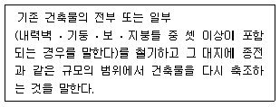
- 신축
- 개축
- 증축
- 재축
(정답률: 57%)
84. 소방시설법령상 1급 소방안전관리 대상물에 해당되지 않는 것은?
- 30층 이하이거나 지상으로부터 높이가 120m 미만인 아파트
- 연면적 15000m2 이상인 특정소방대상물(아파트는 제외)
- 연면적 15000m2 미만인 특정소방대상물로서 층수가 11층 이상인 것(아파트는 제외)
- 가연성가스를 1000톤 이상 저장∙취급하는 시설
(정답률: 57%)
85. 방염성능기준 이상의 실내장식물 등을 설치하여야 하는 특정소방대상물에 해당되지 않는 것은?
- 근린생활시설 중 체력단련장
- 의료시설 중 종합병원
- 층수가 15층인 아파트
- 숙박이 가능한 수련시설
(정답률: 71%)
86. 소방시설의 종류 중 피난설비에 해당하는 것은?
- 비상조명등
- 자동화재속보설비
- 가스누설경보기
- 무선통신보조설비
(정답률: 73%)
87. 제2종 근린생활시설 중 일반음식점 및 휴게음식점의 조리장의 안벽은 바닥으로부터 얼마의 높이까지 내수재료로 마감하여야 하는가?
- 0.3m
- 0.5m
- 1m
- 1.2m
(정답률: 46%)
88. 바우하우스(Bauhaus)에 관한 설명으로 가장 거리가 먼 것은?
- 20세기 아방가르드의 운동이나 양식들을 장식적이고 감각적으로 현대 감각에 맞도록 표현하기 위한 운동
- 1919년 그로피우스(W.Gropius)를 중심으로 독일의 바이마르(Weimar)에 창설된 조형 학교의 명칭
- 예술적 창작과 공학적 기술을 통합하려는 목표로서 새로운 조형이념에 근거한 교육기관
- 건축, 조각, 회화 뿐만 아니라 현대 디자인의 발전에 결정적인 영향을 주었으며, 대량 생산을 위한 원형제작을 지향
(정답률: 53%)
89. 조적식 구조에 관한 설명으로 옳지 않은 것은?
- 조적식 구조인 각층의 벽은 편심하중이 작용하지 아니하도록 설계하여야 한다.
- 조적식 구조인 내력벽의 기초(최하층의 바닥면 이하에 해당하는 부분을 말한다)는 독립기초로 하여야 한다.
- 조적식 구조인 내력벽의 두께는 조적재가 벽돌인 경우에는 당해 벽높이의 1/20 이상, 블록인 경우에는 당해 벽높이의 1/16 이상으로 하여야 한다.
- 조적식 구조인 내력벽으로 둘러쌓인 부분의 바닥면적은 80m2를 넘을 수 없다.
(정답률: 53%)
90. 왕대공 지붕틀에 관한 설명으로 옳지 않은 것은?
- 왕대공과 마룻대는 가름장 장부맞춤을 한다.
- 평보와 ㅅ자보는 안장맞춤으로 한다.
- ㅅ자보와 달대공은 빗턱통넣고 짧은 사개맞춤으로 한다.
- 왕대공과 평보는 짧은 장부맞춤으로 한다.
(정답률: 47%)
91. 시멘트 벽돌(표준형)을 가지고 2.0B의 가로벽을 쌓았을 때 벽의 두께로 가장 적합한 것은?
- 280mm
- 290mm
- 340mm
- 390mm
(정답률: 54%)
92. 그리스, 로마건축에 대한 추억, 지성 및 아름다운 기품 재현을 목표로 18세기 중엽이후 발생된 사조는?
- 르네상스
- 낭만주의
- 고전주의
- 절충주의
(정답률: 39%)
93. 문화 및 집회시설(전시장 및 동∙식물원은 제외)의 용도로 쓰이는 건축물의 관람석 또는 집회실의 반자의 높이는 최소 얼마 이상이어야 하는가? (단, 관람석 또는 집회실로서 그 바닥면적이 200m2 이상인 경우)
- 2.1m
- 2.3m
- 3m
- 4m
(정답률: 55%)
94. 급수∙배수 등의 용도를 위하여 건축물에 설치하는 배관설비의 설치 및 구조에 관한 설명으로 옳지 않은 것은?
- 배관설비를 콘크리트에 묻는 경우 부식의 우려가 있는 재료는 부식방지조치를 할 것
- 건축물의 주요부분을 관통하여 배관하는 경우에는 건축물의 구조내력에 지장이 없도록 할 것
- 승강기의 승강로안에는 승강기의 운행에 필요한 배관 설비외에 다른 용도의 배관설비를 함께 설치할 것
- 압력탱크 및 급탕설비에는 폭발등의 위험을 막을 수 있는 시설을 설치할 것
(정답률: 76%)
95. 철근콘크리트 구조에 관한 설명으로 옳지 않은 것은?
- 철근콘크리트 건축물은 라멘 구조로 하는 것이 보통이다.
- 압축철근은 부재의 장기처짐에 관여한다.
- 철근이 인장력에 충분히 저항할 수 있다.
- 철골조에 비하여 철거가 매우 간단하다.
(정답률: 67%)
96. 다음은 옥내소화전설비를 설치하여야 하는 특정소방대상물에 대한 기준이다. ( )안에 알맞은 것은?
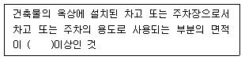
- 100m2
- 150m2
- 180m2
- 200m2
(정답률: 58%)
97. 100세대의 공동주택을 신축할 경우 시간당 최소 몇 회 이상의 환기가 이루어질 수 있도록 자연환기설비 또는 기계환기설비를 설치하여야 하는가?
- 0.5회
- 0.6회
- 0.7회
- 0.8회
(정답률: 45%)
98. 소방시설법령에 따라 무창층은 특정 조건을 가진 개구부 합계의 기준에 따라 판단하도록 되어 있는데 이 개구부의 요건으로 옳지 않은 것은?
- 크기는 지름 50cm 이상의 원이 내접(內接)할 수 있는 크기일 것
- 해당 층의 바다면으로부터 개구부 밑부분까지의 높이가 1.2m 이내일 것
- 도로 또는 차량이 진입할 수 있는 빈터를 향할 것
- 내부 또는 외부에서 쉽게 파괴되지 않도록 할 것
(정답률: 59%)
99. 건축허가 등을 함에 있어서 미리 소방본부장 또는 소방서장의 동의를 받아야 하는 건축물 등의 범위기준으로 옳지 않은 것은?
- 지하층 또는 무창층이 있는 건축물(공연장 제외)로서 바닥면적이 100m2 이상인 층이 있는 것
- 차고∙주차장으로 사용되는 바다면적이 200m2 이상인 층이 있는 건축물이나 주차시설
- 승강기 등 기계장치에 의한 주차시설로서 자동차 20대 이상을 주차할 수 있는 시설
- 항공기격납고, 관망탑, 항공관제탑, 방송용 송수신탑
(정답률: 61%)
100. 건축물의 바깥쪽에 설치하는 피난계단의 구조에 관한 기준으로 옳지 않은 것은?
- 계단은 그 계단으로 통하는 출입구외의 창문등(망이 들어 있는 유리의 붙박이창으로서 그 면적이 각각 1m2 이하인 것을 제외한다)으로부터 2m 이상의 거리를 두고 설치할 것
- 건축물의 내부에서 계단으로 통하는 출입구에는 을종방화문을 설치할 것
- 계단의 유효너비는 0.9m 이상으로 할 것
- 계단은 내화구조로 하고 지상까지 직접 연결되도록 할 것
(정답률: 68%)
6과목: 건축환경
101. 건축물의 에너지절약을 위한 단열계획으로 옳지 않은 것은?
- 외벽 부위는 외단열로 시공한다.
- 외피의 모서리 부분은 열교가 발생하지 않도록 단열재를 연속적으로 설치한다.
- 건물의 창호는 가능한 작게 설계하되, 열손실이 적은 북측의 창면적은 가능한 크게 한다.
- 창호면적이 큰 건물에는 단열성이 우수한 로이(Low-E) 복층창이나 삼중창 이상의 단열 성능을 갖는 창호를 설치한다.
(정답률: 72%)
102. 인체의 열적 쾌적감에 영향을 미치는 물리적 온열 요소에 속하지 않는 것은?
- 기류
- 기온
- 복사열
- 공기의 밀도
(정답률: 66%)
103. 다음 중 통기관의 설치목적과 가장 거리가 먼 것은?
- 배수계통 내의 배수 및 공기의 흐름을 원활히 한다.
- 모세관 현상에 의해 트랩 봉수가 파괴되는 것을 방지한다.
- 사이폰 작용에 의해 트랩 봉수가 파괴되는 것을 방지한다.
- 배수관 계통의 환기를 도모하여 관내를 청결하게 유지한다.
(정답률: 40%)
104. 건축물의 피난∙방화구조 등의 기준에 관한 규칙상거실의 용도에 따른 조도기준이 높은 것에서 낮은 순서대로 옳게 배열된 것은? (단, 바닥에서 85cm 높이에 있는 수평면의 조도)
- 독서 ＞ 관람 ＞ 설계 ＞ 일반사무
- 독서 ＞ 설계 ＞ 관람 ＞ 일반사무
- 설계 ＞ 일반사무 ＞ 독서 ＞관람
- 설계 ＞ 독서 ＞ 관람 ＞ 일반사무
(정답률: 65%)
1⑤. 공동주택에서의 결로 방지 방법으로 옳지 않은 것은?
- 주방 벽 근처의 공기를 순환시킨다.
- 실내 세탁을 할 경우, 수증기 발생을 고려하여 적절히 환기한다.
- 발코니 측벽의 경우, 열손실이 많으므로 물건 등을 쌓아서 막아 둔다.
- 실내공기의 포화수증기량은 온도가 높을수록 많으므로 난방을 하여 상대습도를 낮춘다.
(정답률: 71%)
106. 실내공기질 관리법령에 따른 신축 공동주택의 실내 공기질 측정항목에 속하지 않는 것은?
- 벤젠
- 라돈
- 자일렌
- 에틸렌
(정답률: 36%)
107. 다음의 조명에 관한 설명 중 ( )안에 알맞은 용어는?
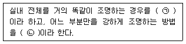
- ㉠ 직접조명, ㉡ 국부조명
- ㉠ 직접조명, ㉡ 간접조명
- ㉠ 전반조명, ㉡ 국부조명
- ㉠ 상시조명, ㉡ 간접조명
(정답률: 74%)
108. 다음의 설명에 알맞은 음의 성질은?
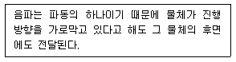
- 반사
- 흡음
- 간섭
- 회절
(정답률: 75%)
109. 다음 중 습공기선도의 구성에 속하지 않는 것은?
- 비열
- 절대습도
- 습구온도
- 상대습도
(정답률: 57%)
110. 벽체의 차음성을 높이기 위한 방법으로 옳지 않은 것은?
- 벽체의 기밀성을 높인다.
- 벽체의 투과손실을 작게 한다.
- 벽체는 되도록 무거운 재료를 사용한다.
- 공명효과 및 일치효과가 발생되지 않도록 벽체를 설계한다.
(정답률: 53%)
111. 다음의 건물 급수방식 중 수질오염의 가능성이 가장 큰 것은?
- 수도직결방식
- 압력탱크방식
- 고가탱크방식
- 펌프직송방식
(정답률: 65%)
112. 다음과 같은 [조건]에서 재실인원 40명인 강의실에 요구되는 필요환기량은?
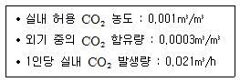
- 900m3/h
- 1000m3/h
- 1100m3/h
- 1200m3/h
(정답률: 40%)
113. 중력환기에 관한 설명으로 옳지 않은 것은?
- 환기량은 개구부 면적에 비례하여 증가한다.
- 실내외의 온도차에 의한 공기의 밀도차가 원동력이 된다.
- 개구부의 전후에 압력차가 있으면 고압측에서 저압측으로 공기가 흐른다.
- 어떤 경우에서도 중성대의 하부가 공기의 유입측, 상부가 공기의 유출측이 된다.
(정답률: 68%)
114. 불쾌 글레어의 발생 원인과 가장 거리가 먼 것은?
- 휘도가 높은 광원
- 시선에 노출된 광원
- 눈에 입사하는 광속의 과다
- 물체와 그 주위 사이의 저휘도 대비
(정답률: 74%)
115. A실의 냉방부하를 계산한 결과 현열부하가 5000W이다. 취출공기온도를 16℃로 할 경우 송풍량은? (단, 실온은 26℃, 공기의 밀도는 1.2kg/m3, 공기의 비열은 1.01kJ/kg∙K이다.)
- 약 825m3/h
- 약 1240m3/h
- 약 1485m3/h
- 약 2340m3/h
(정답률: 38%)
116. 개별급탕방식에 관한 설명으로 옳지 않은 것은?
- 배관의 열손실이 적다.
- 시설비가 비교적 싸다.
- 규모가 큰 건축물에 유리하다.
- 높은 온도의 물을 수시로 얻을 수 있다.
(정답률: 54%)
117. 다음 중 음향장해 현상의 하나인 공명을 피하기 위한 대책으로 가장 알맞은 것은?
- 흡음재를 분산배치시킨다.
- 실의 마감을 반사재 중심으로 구성한다.
- 실의 표면을 매끄러운 재료로 구성한다.
- 실의 평면 크기 비율(가로 : 세로)을 1 : 3 이상으로 한다.
(정답률: 62%)
118. 점광원으로부터 일정 거리 떨어진 수평면이 조도에 관한 설명으로 옳지 않은 것은?
- 광원의 광도에 비례한다.
- cos (입사각)에 비례한다.
- 거리의 제곱에 반비례한다.
- 측정점의 반사율에 비례한다.
(정답률: 40%)
119. 공기조화방식 중 단일덕트 재열방식에 관한 설명으로 옳지 않은 것은?
- 전수방식의 특성이 있다.
- 재열기의 설치 공간이 필요하다.
- 잠열부하가 많은 경우나 장마철 등의 공조에 적합하다.
- 부하특성이 다른 여러 개의 실이나 존이 있는 건물에 적합하다.
(정답률: 38%)
120. 다음 중 축동력이 가장 많이 소요되는 송풍기 풍량제어 방법은?
- 회전수 제어
- 토출댐퍼 제어
- 흡입베인 제어
- 흡입댐퍼 제어
(정답률: 40%)